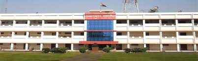
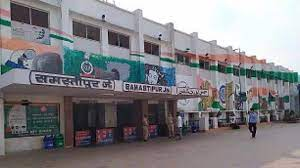

〶 SAMASTIPURcity




About samastipur...
Samastipur is a city and a municipal corporation in Bihar, India. It is the headquarter of Samastipur district and comes under Darbhanga division. The Budhi Gandak river flows through the town. It is one of the five railway divisions of ECR, Hajipur.

About samastipur junction...
Samastipur Junction railway station, is a railway station serving the city of Samastipur in the Samastipur district in the Indian state of Bihar. The Samastipur Junction railway station, is well connected to most of the major cities in India by the railway network and serves the city with numerous trains.
Samastipur, town, north-central Bihar state, northeastern India. It lies just south of the Burhi (“Old”) Gandak River, about 30 miles (50 km) southeast of Muzaffarpur.
Samastipur is a major rail hub with workshops, and it engages in agricultural trade and has sugar refining as its chief industry. The town has a hospital and tuberculosis clinic, and religious fairs are held annually. Samastipur was constituted a municipality in 1897. The Indian railway minister Lalit N. Mishra was assassinated there on January 2, 1975. Pop. (2001) 55,589; (2011) 62,935.